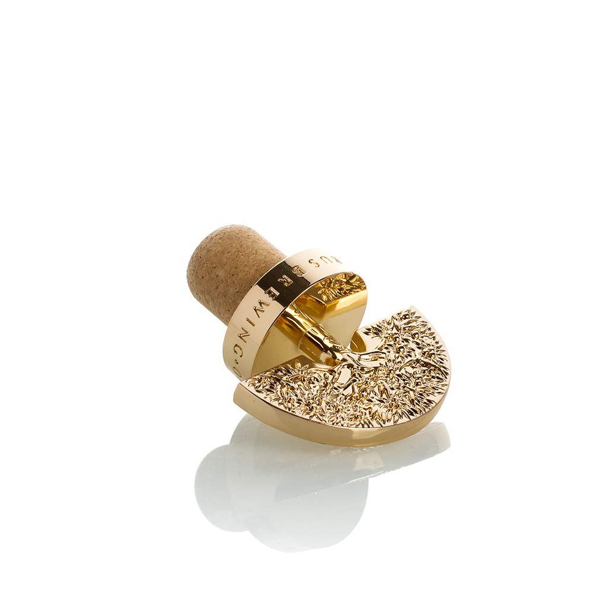
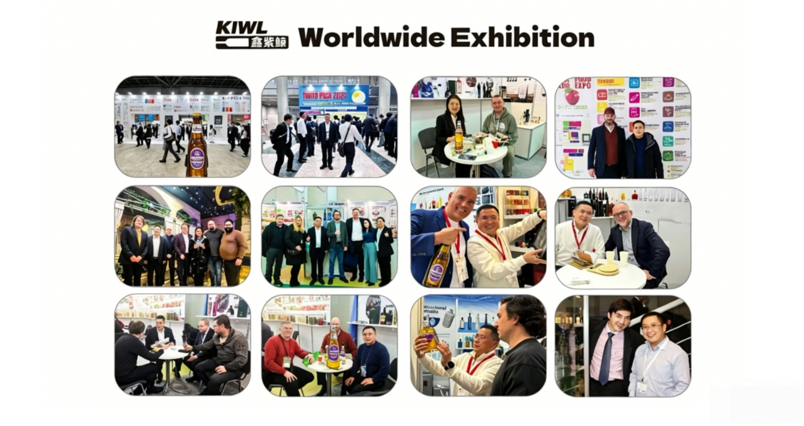

Jiangsu KIWL Machinery Manufacturing Group Co., Ltd is one of the most professional manufacturers and suppliers of zamak zinc alloy spirit stopper in China. Please rest assured to wholesale high quality zamak zinc alloy spirit stopper from our factory. Contact us for more details.
Products Description
Zamak Zinc Alloy Spirit Stopper
Our zinc alloy wine stoppers are specially designed for premium spirits such as whisky, combining elegance with practicality. The top is crafted from high-quality zinc alloy, offering a sturdy yet visually appealing finish, while the base is made from ultra-fine particle material to ensure a secure seal, locking in flavour and preventing leakage. For added flexibility, the base can be made from polymer materials, while the top offers options such as wood, plastic, or glass, allowing for complete customisation to match your brand identity. As a leading supplier in China, we have helped global brands enhance their packaging, boost shelf appeal, and improve consumer perception through tailored solutions. This stopper combines exceptional craftsmanship with market-driven design, ensuring your product stands out in a competitive market.
Products Details
Product Highlights
As a professional manufacturer and supplier of wine bottle stoppers based in China, our Zamak Zinc Alloy Spirit Stopper is specifically designed for premium spirits such as whisky, brandy, and vodka, combining a luxurious appearance with exceptional functionality. Our factory employs high-precision zinc alloy die-casting technology to ensure the stopper's top structure is robust and premium in feel, while supporting various material combinations such as wood, plastic, and glass to meet different brand positioning requirements. The stopper body can be made from ultra-fine particle materials or high-performance polymers, offering excellent sealing properties and corrosion resistance, making it suitable for long-term storage and display. As a source supplier, we not only provide high-quality products but also offer end-to-end customisation services from design to production, making us a trusted partner for overseas importers, brands, and distilleries in China.
Product Features
Our Zamak Zinc Alloy Spirit Stopper offers excellent sealing performance, effectively preventing alcohol evaporation and external contamination, ensuring that spirits retain their original flavour and quality during storage and transportation. The top of the stopper is made of zinc alloy, combined with fine polishing and engraving techniques, which not only enhances the product's durability but also improves brand visual recognition. The stopper body can be customised with different materials based on customer requirements. For example, ultra-fine particle material offers a traditional cork feel, while high-molecular material is lighter and more environmentally friendly. Additionally, the overall structure of the bottle stopper is designed for ease of installation and removal, making it suitable for use on automated filling production lines. As an experienced supplier, we understand the dual demands of functionality and aesthetics from B2B customers. Therefore, we balance practicality and artistry in product development to help customers stand out in the competitive market.


Product Advantages
By choosing us as your supplier, you will receive one-stop customised services from design and prototyping to mass production. We have a modern production base and multiple automated production lines with a monthly production capacity of hundreds of thousands of pieces, capable of meeting large order requirements. The customisation process is transparent and efficient, with the following specific steps:
1. Requirement Communication: Customers provide product requirements (materials, dimensions, processes, quantities, etc.), and we assign a dedicated professional team to coordinate.
2. Design Proposal: Based on the customer's brand identity, we provide 3D renderings, material samples, and process recommendations.
3. Sample Production: After confirming the design, we produce physical samples for client approval, with multiple revisions available until satisfaction is achieved.
4. Mass Production: Following sample approval, we enter the mass production phase with comprehensive quality control to ensure consistency.
5. Quality Inspection and Shipping: Finished products undergo rigorous quality inspections (including seal integrity tests, inspections, and functional tests), and are shipped upon passing all tests.
Additionally, we offer OEM/ODM services, providing flexible MOQ (minimum order quantity), responsive after-sales support, and competitive factory prices to help B2B clients reduce procurement costs and enhance supply chain efficiency. Whether you are an importer, brand owner, or winery, we can be your long-term, stable partner in China.
Why Choose Us?
our Advantages

Company Profile
Jiangsu KIWL Machinery Manufacturing Group Co., Ltd. specialises in the sale and export of packaging materials for the global alcoholic beverage industry. Our product range is extensive and diverse, encompassing glass bottles, bottle caps, corks, labels, wine glasses, and filling machines, among others. We are able to provide comprehensive packaging-related products to alcoholic beverage and beverage manufacturers. We offer customisation services, including design, materials, dimensions, and colours, while ensuring the protection of our clients' designs. Our operations fully comply with international standards, holding certifications such as ISO9001, CE, and FDA. Our production processes undergo regular audits to ensure product quality meets stringent global standards.
Certification
Jiangsu KIWL Machinery Manufacturing Group Co., Ltd. stands out with a sound management framework and strict compliance with industry-leading practices. We hold certifications like ISO9001, CE, and FDA, showcasing our commitment to operational excellence. These accreditations not only prove our manufacturing expertise but also assure clients that their orders are processed with top-tier integrity and attention. Our certified status underscores our professionalism and lasting dependability in the glass packaging sector.


Exhibition
Emphasizing global market expansion, Jiangsu KIWL Machinery Manufacturing Group Co., Ltd. regularly showcases at international trade exhibitions to display our cutting - edge packaging solutions. Ranging from high - end glass containers to sophisticated filling machinery, we provide a full product portfolio for the liquor and beverage industry. Our exhibition approach highlights forging client partnerships, showcasing production superiority, and broadening our global reach. By participating in events across Asia, Europe, and the Americas, we keep enhancing our brand influence and remain at the industry trend forefront.
Packing & Delivery
With extensive experience in global transportation management, we provide our customers with a wide range of logistics solutions covering sea, air and land transportation. Our services are designed to meet diverse transportation needs, whether it is handling large-scale sea freight, urgent air freight, or flexible land transportation distribution. By working with us, you will gain a dedicated, flexible and reliable partner to help you overcome all cross-border logistics challenges.

FAQ
01.What materials are available for the Zamak Zinc Alloy Spirit Stopper, and can the design be customized?
02.What is the minimum order quantity (MOQ) and what is your customization process?
1. Requirement Gathering: Share your design specifications or ideas.
2. Design & Sample Making: We provide 3D renderings and physical samples for approval.
3. Mass Production: Once the sample is confirmed, we proceed with bulk manufacturing under strict quality control.
4. Quality Inspection & Shipment: Each stopper is inspected before shipment to ensure premium quality. We offer competitive factory pricing and efficient lead times, making us an ideal partner for B2B clients.
03.How do you ensure the quality and sealing performance of the stoppers?
Hot Tags: zamak zinc alloy spirit stopper, China zamak zinc alloy spirit stopper manufacturers, suppliers, factory